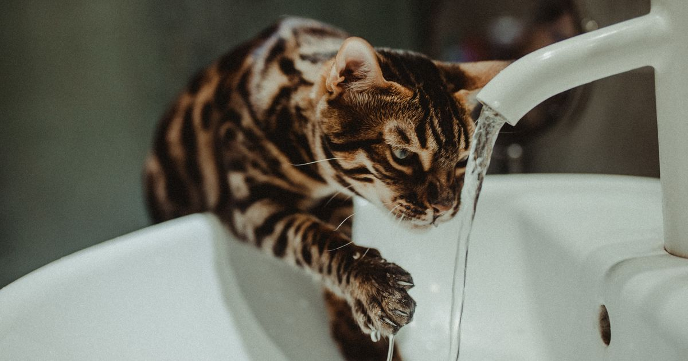

Este post contém links de afiliado. Podemos receber uma comissão em compras feitas através deles, sem custo adicional para você.
Entre os bebedouros automáticos mais vendidos no Mercado Livre em 2026 estão modelos com filtro de carvão ativado de marcas como Tobo e Amicus, que mantêm a água circulando continuamente e livre de impurezas. A escolha certa depende principalmente de três fatores: a capacidade necessária para o número de pets em casa, o material do reservatório (plástico, inox ou cerâmica) e a facilidade de manutenção do filtro e do motor.
Este comparativo reúne os modelos mais vendidos da categoria, os critérios técnicos que realmente diferenciam um bebedouro do outro, e um guia prático para escolher pelo número e porte dos pets da casa. Se você ainda não decidiu entre comedouro e bebedouro automático, o guia completo de comedouro automático ajuda a entender como os dois equipamentos se complementam.
Key Takeaways
- O Tobo Fonte Raia Pet é apontado como a melhor opção de custo-benefício, com capacidade de 2,5 litros e voltagem bivolt (Portal Ar Livre, retrieved 2026-08-20).
- A Amicus Aqua Flow tem 1,5 litro de capacidade, expansível a até 3,5 litros com uma garrafa PET — boa opção para pets grandes ou vários animais.
- Praticamente todos os modelos usam filtro de carvão ativado para reduzir impurezas e odores.
- Bebedouros não substituem o comedouro automático — resolvem problemas diferentes (ver comedouro x bebedouro automático).
guia completo de comedouro automático para pet
Capacidade de 2,5 litros, formato de tobogã que atende pets de portes variados, e voltagem bivolt. Apontado como a melhor opção de custo-benefício entre os modelos comparados por fontes do setor. O formato em degraus imita uma fonte natural, o que costuma atrair gatos mais resistentes a beber água parada, e o reservatório de 2,5 litros é suficiente para um gato ou cão pequeno passar de 2 a 3 dias sem precisar de reabastecimento.
A montagem é simples: encaixar a bomba submersa no compartimento inferior, posicionar o filtro de carvão ativado no topo e encher o reservatório. Não há app nem conectividade Wi-Fi neste modelo, o que reduz o número de pontos de falha e torna a manutenção mais previsível para quem prefere um equipamento totalmente mecânico.
Com 1,5 litro de capacidade nativa, expansível a até 3,5 litros usando uma garrafa PET — uma solução prática para quem tem mais de um pet ou animais de porte grande sem precisar comprar um modelo maior de saída (SRConecta, retrieved 2026-08-20). O sistema de garrafa acoplável funciona como reservatório adicional: a água desce por gravidade para repor o nível do prato conforme os pets bebem, sem precisar de energia elétrica para essa etapa.
Esse formato expansível é o principal diferencial da Amicus Aqua Flow frente à Tobo: em casas com dois ou mais pets, ou com cães que bebem grandes volumes de água, a garrafa PET evita reabastecimento diário sem exigir a compra de um bebedouro de maior capacidade nativa. A desvantagem é que a garrafa fica visível e exposta, o que pode não agradar quem busca um visual mais discreto no ambiente.
O material do reservatório e do prato influencia tanto a durabilidade quanto a higiene do bebedouro. Reservatórios de inox resistem melhor a arranhões e não absorvem odores como o plástico pode absorver ao longo do tempo, mas encarecem o produto final. Já os modelos de cerâmica somam peso ao conjunto, o que reduz o risco de o bebedouro tombar com pets mais agitados, só que exigem cuidado redobrado no transporte e na limpeza por serem mais frágeis a quedas.
A maioria dos bebedouros automáticos vendidos no Mercado Livre usa plástico ABS no reservatório principal, com peças de inox ou cerâmica apenas no prato de contato com a água, um meio-termo que equilibra custo e higiene. Para quem quer entender a fundo as diferenças entre inox e cerâmica antes de decidir, vale conferir o comparativo dedicado: bebedouro fonte para gato: inox x cerâmica, qual escolher?
A regra prática mais usada por veterinários e lojistas do setor é calcular a partir do consumo diário estimado de água do pet, geralmente entre 50 e 100 ml por quilo de peso corporal, e multiplicar pelo número de dias que o bebedouro deve durar sem reabastecimento. Para um gato adulto de 4 kg, isso equivale a algo entre 200 e 400 ml por dia — um bebedouro de 2 a 2,5 litros cobre tranquilamente uma semana de consumo individual, mesmo considerando a evaporação normal.
Em casas com dois ou três pets de porte pequeno a médio, a recomendação é optar por um modelo de pelo menos 2,5 litros ou por um sistema expansível como a Amicus Aqua Flow, para não depender de reabastecimento diário. Já em casas com cães de porte grande, que bebem volumes maiores de uma vez, vale considerar dois pontos de água na casa, um bebedouro automático principal e um pote comum de apoio, para garantir acesso à água mesmo se o motor do bebedouro falhar.
O problema mais relatado em bebedouros automáticos é o entupimento da bomba por resíduos de ração ou pelos, que reduz o fluxo de água e pode até impedir o funcionamento do motor. A prevenção mais eficaz é a limpeza semanal completa do reservatório, prato e bomba, além de manter o bebedouro longe de onde o pet costuma deixar cair ração.
Outro ponto de atenção é o nível de água: a maioria dos modelos sem sensor de nível precisa de checagem manual a cada 2 ou 3 dias, já que o motor rodando seco reduz a vida útil da bomba. Modelos mais recentes com indicador visual de nível facilitam esse acompanhamento sem precisar abrir o reservatório com frequência.
O filtro de carvão ativado precisa ser trocado periodicamente — a recomendação geral é a cada 30 a 60 dias, dependendo da qualidade da água usada, ou antes disso caso a água fique turva, com odor ou menor fluxo (CSA Jardins, retrieved 2026-08-20). A limpeza geral do bebedouro é recomendada a cada 1-2 semanas.
| Critério | Tobo Fonte Raia Pet | Amicus Aqua Flow |
|---|---|---|
| Capacidade | 2,5 litros | 1,5L (expansível a 3,5L) |
| Filtro | Carvão ativado | Carvão ativado |
| Voltagem | Bivolt | Bivolt |
| Ideal para | Custo-benefício geral | Multi-pet ou pets grandes |
Nossa leitura do mercado: ao cruzar as fichas técnicas dos bebedouros com os comedouros já comparados neste cluster (ver melhor comedouro para cachorro e para gatos), o padrão se repete: a diferença de preço entre os modelos de entrada e os mais caros está mais relacionada à capacidade e ao formato de expansão do que a diferenças reais de filtragem — o filtro de carvão ativado é praticamente padrão em toda a categoria.
bebedouro fonte para gato: inox x cerâmica, qual escolher?
Esta seleção foi construída a partir das fichas técnicas divulgadas pelos fabricantes e vendedores, cruzadas com comparativos independentes do setor pet e com boas práticas de hidratação recomendadas para cães e gatos. Não realizamos teste laboratorial de vazão ou ruído do motor — os dados de capacidade, voltagem e tipo de filtro refletem o que consta nos anúncios verificados. Recomendamos sempre conferir as avaliações mais recentes de compradores antes de fechar a compra, já que pequenas variações de lote podem afetar a experiência. Veja nossa política editorial e de afiliados para entender como selecionamos e verificamos produtos.
O Tobo Fonte Raia Pet é a escolha mais equilibrada para a maioria dos tutores. Para casas com mais de um pet ou animais grandes, a capacidade expansível da Amicus Aqua Flow compensa o investimento extra. Antes de decidir, vale considerar também o material do reservatório e a rotina de limpeza que você está disposto a manter, já que esses dois fatores pesam tanto quanto a capacidade na experiência de uso a longo prazo.
comedouro x bebedouro automático — você precisa dos dois?
melhor comedouro automático para cachorro — os mais vendidos · melhores alimentadores automáticos para gatos
Escrito pela Equipe Smart Pet Gadgets. Veja nossa política editorial e como verificamos as fontes citadas neste artigo.
🐾 Confira o preço e a disponibilidade atual no Mercado Livre.
Ver no Mercado Livre →Link de afiliado: podemos receber uma comissão por compras feitas através deste link, sem custo adicional para você.
Para muitos gatos, sim. A água em movimento estimula a ingestão, o que ajuda a prevenir problemas urinários comuns em felinos que bebem pouca água quando o líquido fica parado no pote. Para cães, o benefício principal é manter a água filtrada e fresca por mais tempo, especialmente em casas onde o tutor passa longos períodos fora.
O inox é mais resistente a arranhões e não retém odores nem bactérias como o plástico pode reter com o tempo, mas costuma custar mais. A cerâmica é uma alternativa intermediária, pesada o suficiente para não tombar facilmente, mas mais frágil a quedas. O plástico é o mais barato, porém exige limpeza mais frequente para evitar acúmulo de biofilme.
Depende do número e do porte dos animais. Para dois gatos ou um cão pequeno, um bebedouro de 2,5 a 3 litros geralmente é suficiente. Para casas com três ou mais pets, ou cães de porte médio a grande, vale considerar um modelo de capacidade expansível, como a Amicus Aqua Flow, ou até dois bebedouros em pontos diferentes da casa.
A maioria dos modelos com filtro de carvão ativado usa uma bomba silenciosa, mas o nível de ruído pode aumentar quando o filtro está sujo ou quando o nível de água está baixo. Limpar o motor e trocar o filtro nos intervalos recomendados costuma resolver esse problema.
Nildo Alves — curadoria de produtos pet no Smart Pet Gadgets. Testa e pesquisa produtos para cães e gatos, cruzando especificações de fabricante com boas práticas veterinárias e dados de mercado.
Sobre o Smart Pet Gadgets · Contato · Política editorial e de afiliados